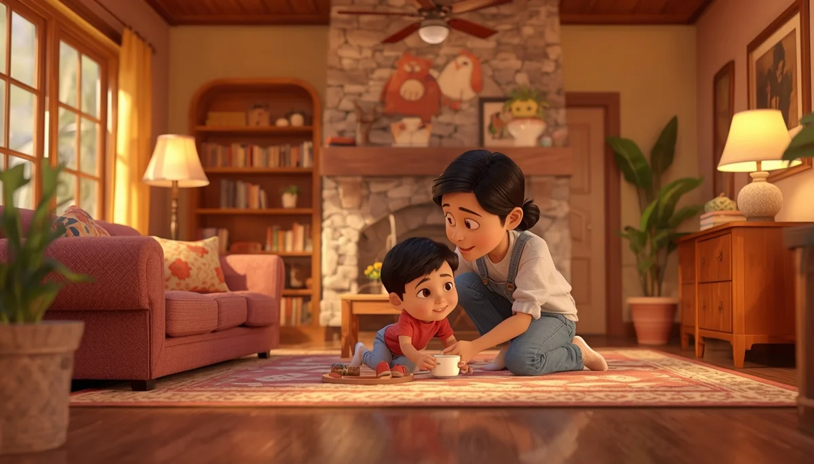
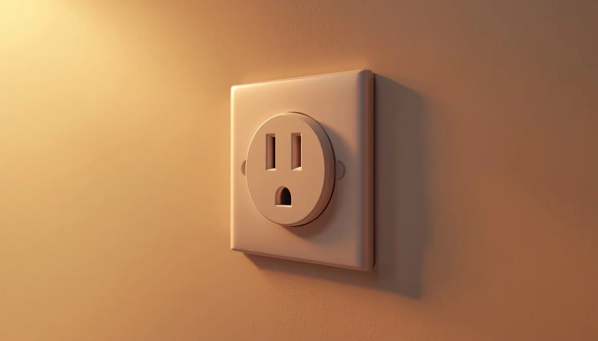

Prevención y Seguridad Infantil: Entornos Protegidos
Primera parte de la guía exhaustiva de urgencias: anticipación del desarrollo infantil, eliminación de riesgos críticos en el hogar y pautas absolutas de supervisión frente al ahogamiento y la asfixia.

Índice Detallado de la Primera Parte
Contenidos de prevención y seguridad avanzada:
- 1. La mentalidad preventiva: anticiparse al desarrollo evolutivo del menor
- 2. Prevención profunda de atragantamientos (OVASC): alimentos y objetos críticos
- 3. Seguridad acuática radical: la regla de oro de la supervisión activa y barreras perimetrales
- 4. El mapa integral de riesgos domésticos: tóxicos, caídas, quemaduras y electrocución
1. La mentalidad preventiva: anticiparse al desarrollo evolutivo del menor
La seguridad infantil no se sustenta sobre la prohibición constante ni sobre el miedo, sino sobre el conocimiento profundo de la neurobiología y la psicomotricidad del niño. Cada etapa del crecimiento abre una ventana de exploración radicalmente nueva: el bebé que empieza a voltearse, el que gatea y explora a ras de suelo, el toddler que camina y descubre la altura de las mesas, o el preescolar que trepa con una agilidad insospechada.
Anticiparse significa modificar el entorno físico antes de que el niño adquiera la habilidad motora para alcanzar el peligro. Los menores carecen por completo de percepción del riesgo; su instinto es la curiosidad pura. Por tanto, la responsabilidad de crear un perímetro seguro recae única y exclusivamente en los adultos cuidadores.

2. Prevención profunda de atragantamientos (OVASC): alimentos y objetos críticos
La asfixia por obstrucción de la vía aérea por cuerpos extraños es una de las emergencias más aterradoras y potencialmente fatales en la infancia, con mayor incidencia entre los 6 meses y los 4 años. En esta etapa convergen factores anatómicos (vías respiratorias estrechas, menor coordinación en la masticación y ausencia de molares definitivos) y conductuales (tendencia a hablar, reír o correr con comida en la boca).
Alimentos de alto riesgo absoluto:
- • Frutos secos enteros y cacahuetes: prohibidos de forma absoluta antes de los 5 años, tanto enteros como en trozos duros. Su tamaño y consistencia taponan perfectamente la tráquea infantil y su composición grasa dificulta la extracción médica si pasan al pulmón.
- • Uvas, tomates cherry y frutas pequeñas: nunca deben ofrecerse enteros. Su forma esférica y firme encaja como un émbolo exacto en la laringe. Deben cortarse siempre longitudinalmente (en cuartos a lo largo) y retirar pepitas duras.
- • Salchichas y alimentos cilíndricos: la forma tubular redonda es un calco del conducto traqueal. Cortarlas en rodajas transversales crea auténticos "tapones de botella". Deben cortarse siempre a lo largo en tiras finas y finamente picadas.
- • Caramelos duros, gominolas gelatinosas y palomitas de maíz: los caramelos y gominolas se adhieren por su textura a las paredes de la vía aérea bloqueando el paso del aire. Las palomitas contienen cascarillas ligeras que se aspiran fácilmente hacia los bronquios provocando neumonías severas.
Objetos cotidianos letales:
Fuera de la cocina, el peligro reside en objetos pequeños que los niños se llevan por reflejo a la boca:
- • Globos de látex sin inflar o rotos: constituyen la primera causa de asfixia mortal por cuerpo extraño no alimentario. El látex se adhiere herméticamente a las cuerdas vocales impidiendo el paso del aire de forma total.
- • Pilas de botón: además del riesgo de atragantamiento mecánico, su ingesta provoca una quemadura química interna devastadora en cuestión de horas por descarga eléctrica en los tejidos del esófago.
- • Imanes de neodimio y piezas pequeñas: si se tragan varios imanes, estos se atraen a través de las paredes intestinales perforando los tejidos.
3. Seguridad acuática radical: la regla de oro de la supervisión activa y barreras perimetrales
Los ahogamientos infantiles en el ámbito doméstico y vacacional se caracterizan por su extrema rapidez y silencio absoluto. A diferencia de las películas, un niño que se ahoga no grita ni agita los brazos pidiendo ayuda; la energía se consume únicamente en intentar respirar, hundiéndose de manera vertical en cuestión de segundos.
Es un mito peligroso pensar que se necesita una gran profundidad: un bebe puede ahogarse mortalmente en apenas dos o tres centímetros de agua retenida en el fondo de una bañera, un cubo de limpieza desatendido, una piscina desmontable pequeña o un estanque de jardín.
El concepto de "Adulto Designado": La supervisión activa implica que los ojos del cuidador están fijos en el niño, sin pantallas de por medio, sin lecturas y sin distracciones. En reuniones familiares junto a piscinas, debe asignarse formalmente a un adulto responsable por turnos estrictos. El uso de flotadores de brazo o manguitos da una falsa sensación de seguridad y nunca exime de la presencia física inmediata del adulto.
4. El mapa integral de riesgos domésticos: tóxicos, caídas, quemaduras y electrocución
El hogar concentra la mayor parte de los accidentes infantiles. Un análisis detallado por áreas permite blindar el espacio de convivencia:
- • Intoxicaciones y productos químicos: los detergentes, geles, pastillas de lavavajillas y productos de limpieza general deben almacenarse en armarios altos dotados de pestillos de seguridad, o bajo llave. Jamás se deben trasvasar líquidos químicos a botellas de agua o refrescos reutilizados, ya que el menor los identificará erróneamente como bebida. Lo mismo aplica para los medicamentos, que deben guardarse en botiquines elevados fuera de su campo visual.
- • Prevención de caídas desde altura: las ventanas accesibles y los balcones deben contar con sistemas de bloqueo de apertura o mallas de protección homologadas. Las escaleras interiores exigen la instalación fija de barreras de seguridad tanto en el tramo superior como en el inferior. Los cambiadores de ropa y camas de los padres nunca deben utilizarse sin la sujeción permanente o la presencia de un adulto al alcance de la mano.
- • Prevención de quemaduras: en la cocina, priorizar siempre el uso de los fuegos posteriores y orientar los mangos de sartenes y cazos hacia la parte de atrás para evitar tirones accidentales. Evitar el uso de manteles largos que los niños puedan tirar provocando la caída de líquidos hirvientes. Al tomar café o té caliente, nunca se debe sostener la taza con el bebé en brazos.
- • Riesgo eléctrico: instalar protectores de enchufes de giro seguro en toda la vivienda y comprobar que las instalaciones no dejen cables pelados o alargadores a ras de suelo al alcance de la manipulación infantil.
Recuerda: La prevención es el primer y más eficaz eslabón de la cadena de supervivencia. Un entorno minuciosamente adaptado evita la inmensa mayoría de las situaciones críticas antes de que lleguen a producirse.